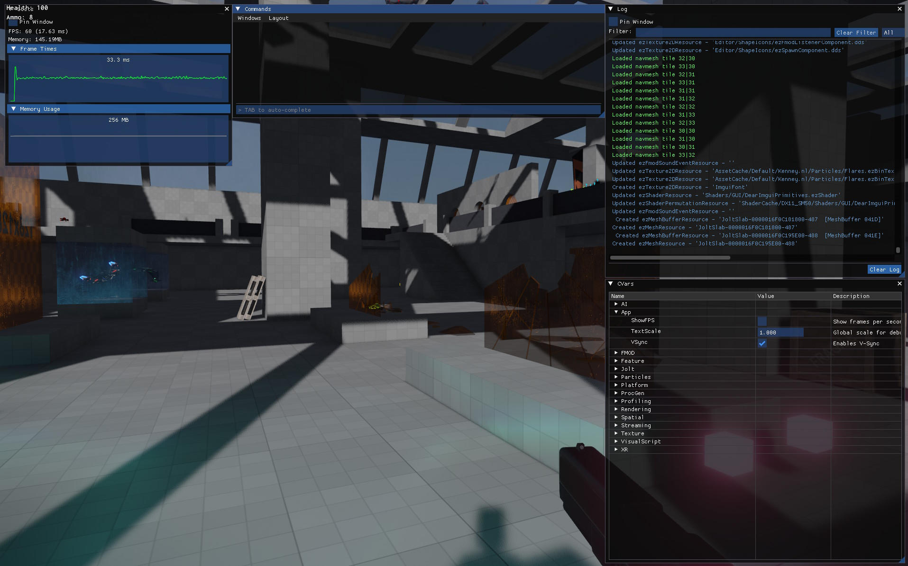

Console
The in-game console is a utility for inspecting the log, modifying CVars and calling console functions.

Console Windows
The console provides multiple windows that can be shown, hidden, and rearranged:
- Command Window: Text input for entering commands with auto-completion. Shows command output separately from log messages.
- Log Window: Displays engine log messages. Supports text filtering and severity level filtering.
- CVar Window: Hierarchical tree view of all CVars. CVars are organized by their dot-separated names (e.g.,
r.Bloomappears under "r" > "Bloom"). - Stats Window: Shows FPS, frame time graph, and memory usage.
Menu Bar
While the console is open, a menu bar is shown at the top of the screen:
- Windows: Toggles the visibility of the individual console windows, including custom windows.
- Layout: Reset Layout moves all windows back to their default position and size and makes them visible again.
- Further menus are added by console actions. Each entry shows the key that triggers it and can also be clicked to execute the action.
Pinnable Overlays
The Stats and Log windows can be pinned using the "Pin Window" checkbox. Pinned windows remain visible as overlays even when the console is closed. This is useful for monitoring performance or watching for specific log messages during gameplay.
Key Bindings
The default key bindings for the console are:
- F1 - Opens/closes the console.
- Up / Down - Select a previously entered command from the history. The history is saved to disk so that commands persist after restarting.
- F2 and F3 - Repeat last and second-to-last commands. This works even when the console is closed.
- TAB - Auto-completes the current input. Also displays all available input options in the output.
- Enter - Executes the typed command. If the typed text is only the name of a CVar without an assignment, this will print the current value and description of the CVar.
When the console is open, the mouse cursor is shown and not clipped to the window, allowing interaction with elements outside the console. A custom mouse cursor is not drawn while it is open, since it may not indicate where clicks go.
Modify CVars
You can modify CVars by typing:
CVarName = value
See the CVars chapter for details.
Binding Keys
To bind commands to certain keys you can call:
bind f App.ShowFPS=
This would bind the command 'App.ShowFPS=' (which toggles the display of the FPS counter) to the f-key. You can only bind commands to printable characters (a-z, 0-9) and the casing matters. So you can also bind another command to SHIFT+f by using bind F ....
To unbind a key call:
unbind f
Log Filtering
The Log window provides filtering options to help find specific messages:
- Text Filter: Type in the filter field to show only log messages containing that text (case-insensitive).
- Severity Filter: Use the dropdown to filter messages by severity.
- Clear Log: Remove all current log messages from the display.
Console Actions
Console actions are commands that are bound to an input action and are additionally listed in the console's menu bar. They are registered through ezConsoleActions:
ezInputActionConfig config;
config.m_sInputSlotTrigger[0] = ezInputSlot_KeyF9;
ezInputManager::SetInputActionConfig("Game", "MyAction", config, true);
ezConsoleActions::AddAction("Game", "MyAction", "MyMenu", []()
{ ezLog::Info("Action executed"); });
The input set and action names must be identical to what was passed to ezInputManager::SetInputActionConfig(), since they are used both to identify the action and to look up the key that is displayed next to the menu entry. The menu name determines under which menu the entry appears.
For the shortcut to work, ezConsoleActions::HandleInput() has to be called once per frame. ezGameApplication does this in Run_ProcessApplicationInput(), and also registers its own developer shortcuts this way.
Custom Windows
Additional ImGui windows can be added to the console. They show up in the Windows menu and are rendered while the console is open:
ezImGuiRegisteredWndHandle hWindow = ezImGuiConsole::RegisterWindow("My Window", [](bool& ref_bOpen)
{
if (ImGui::Begin("My Window", &ref_bOpen))
{
ImGui::Text("Hello");
}
ImGui::End();
});
The callback is only invoked while the window is toggled on. The bool reference is the window's open state, so passing it to ImGui::Begin() makes the window's close button work.
Console Functions
Console functions are an easy way to expose C++ utility functions through the console. The class ezConsoleFunction is used to wrap any function (static or method function) in a delegate and enable the console to call it. Of course, since the user can only input certain types of variables in the console, the argument types that you can use are very limited: strings, numbers (int / float) and boolean.
This code snippet shows how to declare a console function in a class, for example inside a custom game state.
void ConFunc_Print(ezString sText);
ezConsoleFunction<void(ezString)> m_ConFunc_Print;
In the implementation the binding has to be completed. You need to provide a name under which to expose the function, a description (this should include the parameter list) and the actual function to forward the call to. For member functions this has to be an ezDelegate to also bind to the class instance (this).
SampleGameState::SampleGameState()
: m_ConFunc_Print("Print", "(string arg1): Prints 'arg1' to the log", ezMakeDelegate(&SampleGameState::ConFunc_Print, this))
{
}
void SampleGameState::ConFunc_Print(ezString sText)
{
ezLog::Info("Text: '{}'", sText);
}
When you now open the console (F1) in-game and press TAB, the 'Print' function will be among the listed functions. You can then execute it:
Print("Hello Console")
If you need to call a certain function repeatedly, you can bind the call to a key or use F2 and F3 to repeat it, as long as it is the last or second-to-last command in your history.